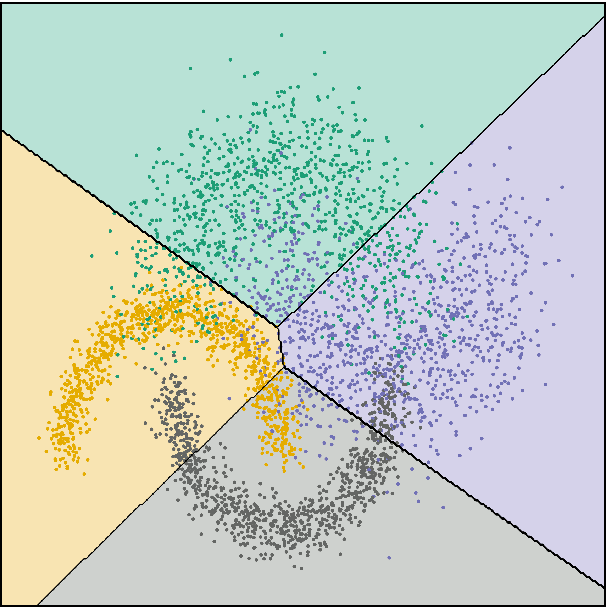

Cédric Dubois
Post-Doc @LAMPh.D. @ Morpheme
See my resume (french)
e-mail : cedric.dubois[whatever]lam.fr
About Me
I am a Post-Doc researcher at LAM, working on data processing in astronomy (model based and learning approches).
I did a PhD in image processing and machine learning for marine ecology, in the Morpheme team (Inria, I3S, UCA), under the supervision of Éric Debreuve and in collaboration with Jean-Olivier Irisson ( COMPLEx team ).
Current Projects
- Turbo Sliding Frank-Wolfe with Bastien Laville : developping an efficient SFW algorithm for off-the-grid reconstruction with JAX to handle large-scale astronomical data.
Astronomical motivation with Wilfried Mercier : automatic clumps detection in local ultra-clumpy galaxies (JWST images). - SICCK : Simple Image Classification with CNN and K-NN : [TBA]
Main : HPC data reduction and component separation with CONCERTO (Line Intensity Mapping instruement).
Side :
Research Interests
- Component separation : Disentangle multiple observed sources based on their physical properties
- Precise PSF interpolation : Estimating a continuus measure of a PSF from its (grid) observation
- Efficient processing with JAX: mainly for SFW and componant separation
- Supervised classification : Interpretable models, Non-Parametric, Kernel methods, Neural Networks. Efficient W-K-NN package : W-K-NN
- Galaxies formation and evolution : Hyper-Spectral imaging ( MUSE ), Morphology and Kinematics ( GalPak3D ), SED fitting ( LePhare )
- Marine Ecology : Copepods volume estimations, in situ Plankton imaging( EcoTaxa )
Publications
-
Easily Interpretable, Non-parametric Sample Transformation for Classification.
Cédric Dubois, Jean-Olivier Irisson, Éric Debreuve.
Pre-print GRETSI 2022. September 2022.
[Paper] [Poster] [Code]
-
Correcting estimations of copepod volume from two-dimensional images.
Cédric Dubois, Jean-Olivier Irisson, Éric Debreuve.
Limnology and Oceanography: Methods , Volume 20, Issue 6. May 2022.
[Paper] [DOI] [Code]
-
Correction of the estimation of the volume of copepods from 2-dimensional in situ images.
Cédric Dubois, Jean-Olivier Irisson, Éric Debreuve.
ASLO Aquatic Sciences Meeting, Majorque, Spain , June 2021.
-
The MUSE Hubble Ultra Deep Field Survey : XVI. The angular momentum of low-mass star-forming galaxies: A cautionary tale and insights from TNG50.
Nicolas F.Bouché et al.
Astronomy & Astrophysics, Volume 654. October 2021.
[DOI]
-
The synthetic Emission Line COSMOS catalogue: H$\alpha$ and [OII] galaxy luminosity functions and counts at 0.3 < z < 2.5.
Shun Saito et al.
Monthly Notices of the Royal Astronomical Society, Volume 494 Issue 1. May 2020.
[DOI]
-
The COSMOS2015 galaxy stellar mass function : Thirteen billion years of stellar mass assembly in ten snapshots
Iary Davidzon et al.
Astronomy & Astrophysics, Volume 605. September 2017.
[DOI]
W-K-NN: Efficient Weighted-K-Nearest-Neighbours for large image datasets
Implementation capitalizing on KeOps KeOps : W-K-NN
[OUTDATED] KLIMT: KerneL based on Intuitive Multivariate Transformation
Visualization of the KLIMT classification as the parameter $\gamma$ increases  -->Services
- Statistic MAM3 Polytech, Nice
- Programmation Python IUT, Nice
- Digital transmission chain (Chaine de transmission numerique) IUT, Nice